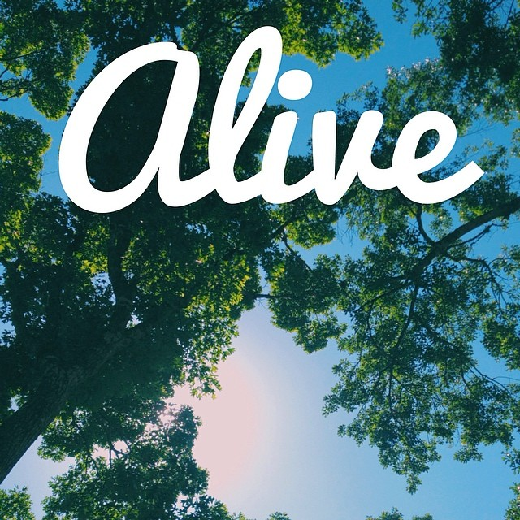
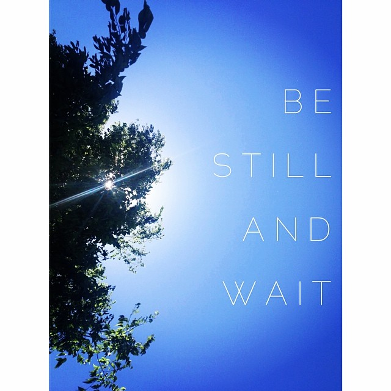

GitHub Projects
quick and easy links to all of my projects
github
832.632.4343
email me
resume
@joeybergeron
This is a simple site to keep track of my work while my portfolio site is being worked on.
Transitions & Animation
PARALLAX
ColorClock (Modified)
Stopwatch
Etsy Project (API)
The Iron Yard Final Project
 
Thanks for stopping by!